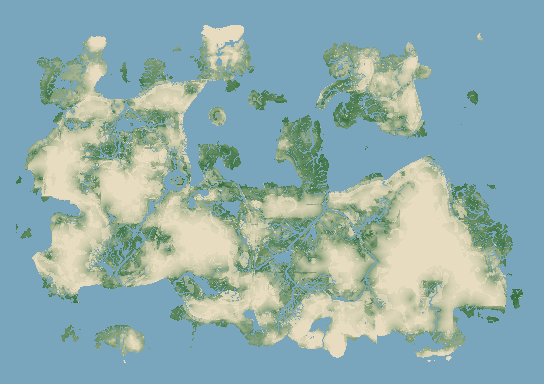
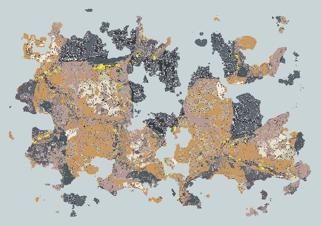

Scribble Empire at a glance. Read the pictures top to bottom; each has one line under it. CLAUDE.md has the words when you want them.
Source: tools/wiki/pages/tour.ts
1The three ideas
A metre-scale grid. A sim that never draws. Features you can delete.
2The building
Dependencies run one way. The sim lives in a worker and mirrors itself to the screen.
3The world
One pass from a seed, then layers for everything that changes.

What the map looks like: how well things grow, tile by tile.

Underneath: rock, ore and caves, cut at one level.
4Kernel and modules
Every feature is a module. The kernel wires them together.
5One tick
Two different orders: needs at start-up, the order number every tick.Every game module in the order it runs, read from the code. Down each column, then the next column.Passing a tag runs only the systems that carry it. Headless tools use this to skip people and fast-forward nature.
6People
Needs rise, and when idle a person works down the list of things to do.
7Discovery
Ideas combine. A proven idea becomes something the group can do.
8The living world
Every animal species is a row of data in one shared food web.